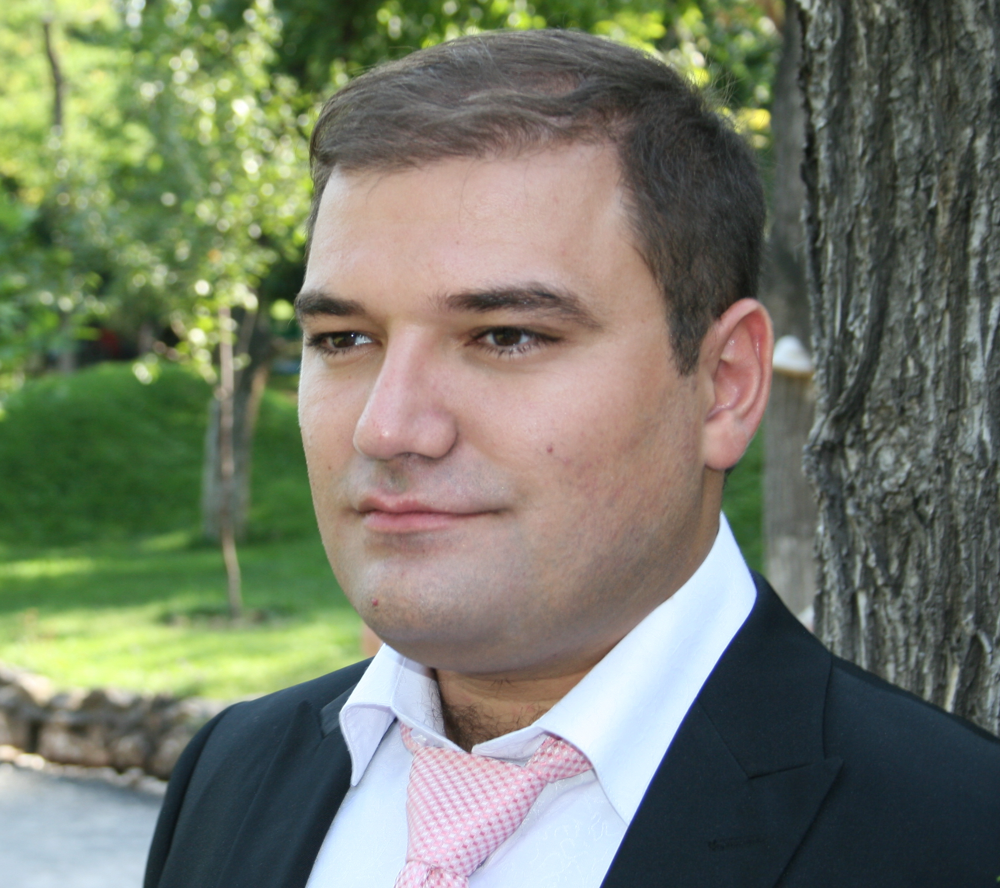

Vagarsh Martirosyan was born in Armenia, where he graduated from the
R. Melikyan Music College in Yerevan, Armenia. He continued his studies
at the Maimonides State Jewish Classical Academy, returning to Armenia where
he had additional studies with Armenian tenor Gegam Grigoryan. Beginning in 2006,
he was engaged as a soloist-trainee in the Opera House at Yerevan. Moving in 2009
to Nuremberg, Germany, he continued his vocal studies at the Hochschule für Musik.
In that same year, he made his professional debut in the title role of Figaro in
Mozart’s Le nozze di Figaro. He continued to be invited back to Armenia and Russia
for various performances and concerts.
Since his debut in Germany, he has sung performances in the Rostock Opera House
having appeared as Dr. Bartolo in Le nozze di Figaro, as Monterone in Verdi’s Rigoletto,
Leporello in Mozart’s Don Giovanni in Nuremberg. Other roles have included Zuniga in
Carmen at the Chiemgauer Opern Festival (Germany), Fasolt in Das Rheingold (Nuremberg),
Oroveso in Norma (Yerevan State Opera), Rene in Iolanta (also Yerevan State Opera),
Gremin in Eugene Onegin (Moscow) and numerous other roles in Armenian operas.
Vagarsh is a award winner of the International Lions Singing Competition (Germany)
in 2010 and finalist of the International Francisco Vinas in 2012 (Spain).
While in Europe, he was represented by Opern und Konzertagentur Renich in Düsseldorf
and Agentur Klein in München.
In 2014, Mr. Martirosyan made his move to the United States. Whilst awaiting his visa
approval, he performed a number of concerts primarily in Southern California, where he
now makes his home. He is very much looking forward to establishing himself as an
artist in the United States. He made his debut in the US with Opera San Luis Obispo’s
production of Puccini’s La Bohème, singing Colline, in October 2016. In 2017 he created
the roles of Alcindoro and Benoit in "La Boheme" Puccini at the San Jose Opera.
